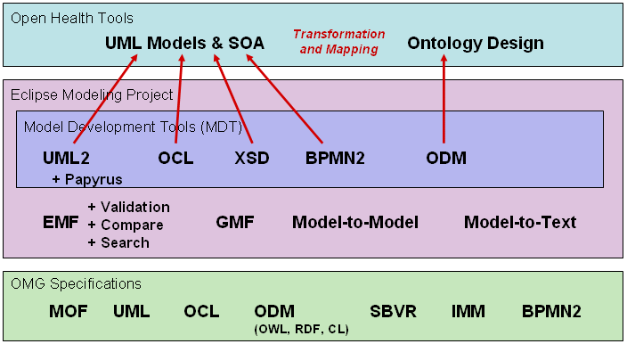

This project provides a set of components for RIM Core Tools that support a UML model-driven analysis, design, and implementation of healthcare standards and applications that are based on HL7 v3 RIM models. The modeling capabilities include:
A separate project component is dedicated to development of CDA Tools that are specialized for designing and implementing CDA templates.
Documentation on the HDF Tools component is available here
This project's title, mdht, emphasizes that these tools are based on the Eclipse model-driven development tool stack, extended with features required for healthcare standards and applications. The Eclipse modeling tools and OMG modeling language dependencies are shown in this figure:
